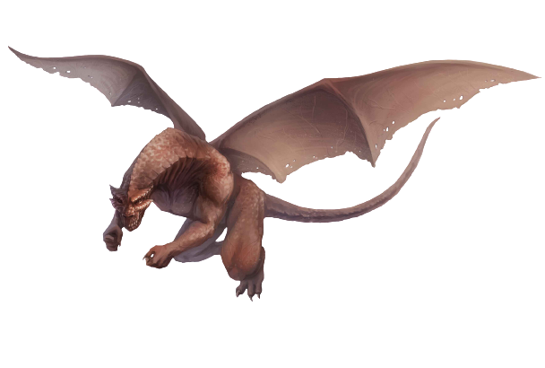

Rank 1
Rank 2
Rank 3
Rank 4
Rank 5
Caças

Fleyer Leech fugitiva
Recompensa: 1.400 créditos
Recentemente um grupo de mercenários eliminou Flayer Leech Effigy e suas crias, porém uma fugiu.
Eles não foram atrás, o que preocupou algumas pessoas que moram perto da localização da criatura que foi morta.
Para garantir que a situação não se torne pior, eles contrataram os serviços da guilda de caçadores.
Localização: Castrovel
Localização: Castrovel
Morte a Vracinea
Recompensa: 1.400 créditos
Alguns xenobiólogos estavam estudando uma Vracinea de perto, quando eles foram atacados por ela, deixando para trás somente alguns poucos sobreviventes.
Esses os quais contrataram os serviços da guilda de caçadores para eliminar a Vracinea e vingar os companheiros mortos.
Localização: Castrovel
Localização: Castrovel
Captura aos Kaion
Recompensa: 2.000 créditos
Alguns mercadores estão em busca dos materias dos Kaion para a fabricação de armas especiais, para isso precisam de pelo menos duas dessa criatura.
Então contrataram a guilda dos caçadores para capturar os Kaion vivos.
Localização: Vácuo de Diáspora
Localização: Vácuo de Diáspora
Pequeno grande Mordagast
Recompensa: 4.600 créditos
Pesquisadores perceberam uma mudança de tamanho em um Mordagast que habita proximo à estação de pesquisa na floresta.
Com medo dessa criatura se tornar um raro Mordagast Butcher, eles contrataram a guilda dos caçadores para eliminar a criatura.
Localização: Castrovel
Localização: Castrovel

Esfriando os Ignursos
Recompensa: 4.600 créditos
Uma corporação de mineração está tendo problemas com um casal de Ignurso que tem afastado os trabalhadores e impedindo as escavações.
Para que isso pare de ocorrer, eles contrataram a guilda de caçadores para eliminar as criaturas.
Localização: Verces
Localização: Verces
Corrida aos Klikharp
Recompensa: 5.400 créditos
Um colecionardor de criaturas planeja fazer uma corrida de Klikharp, porém precisara de mais dessas criaturas.
Ele contratou os serviço da guilda de caçadores para capturar pelo menos um Klikharp grande.
Localização: Verces
Localização: Verces
Infestação de Ksarik
Recompensa: 14.700 créditos
Um grupo de Ksarik tem se expandindo muito rápido, o que pode trazer um perigo ecológico muito grande na área florestal que eles
estão habitando. Para garantir o controle do ecossistema local, alguns xenobiólogos fizeram o pedido para que a guilda de caçadores
eliminem esses Ksarik.
Localização: Castrovel
Localização: Castrovel
Ataque de Surnoch
Recompensa: 25.000 créditos
Uma das fábricas da corporação Glimmerglass foi atacada por um Surnoch, eles afirmam que foi uma sabotagem
de alguma corporação concorrente, porém, precisam que o Surnoch seja eliminado para iniciar as investigações,
para isso contrataram os serviços da guilda de caçadores.
Localização: Diáspora
Localização: Diáspora
Glass Serpent Escarlate
Recompensa: 39.000 créditos
Há relatos de uma GlassSerpent variante que apareceu em eox, de cor avermelhada e aparentemente mais forte.
Um nobre Sabio dos ossos contratou a guilda dos caçadores para que rastrear e capturar a criatura viva, para que seja estudada.
Localização: Eox
Localização: Eox
Matilha de Tashtari
Recompensa: 42.500 créditos
Uma matilha de Tashtari vem chamando a atenção nos pântanos de Castrovel, eles conseguem predar presas enormes e
já dominaram um grande território contra matilhas rivais. Muitos mercadores ficaram interessados pelos Tashtari e contrataram
os serviços da guilda para caça-los e pegar o que é de valor.
Localização: Castrovel
Localização: Castrovel
Horda de Ellicoth
Recompensa: 50.000 créditos
Uma horda de Ellicoth vêm se aproximando de uma cidade em Eox, toda semana eles são afastados, mas sempre retornam.
O sábio dos ossos da cidade quer acabar logo com o problemas, porém ele não pode mobilizar suas forças, então contratou
a guilda dos caçadores para eliminar a horda de Ellicoth.
Localização: Eox
Localização: Eox
Supenga Titã invasora
Recompensa: 133.000 créditos
Um Supenga Titã surgiu nas florestas de Castrovel, desequilibrando a ecologia local e preocupando os povos que moram na região.
A guilda de caçadores pediu para que fosse investigado as pistas até o invasor para capturá-lo vivo ou morto, e assim estudar
o motivo do seu surgimento na área.
Localização: Castrovel
Localização: Castrovel
Oma descontrolada
Recompensa: 198.000 créditos
Uma Oma foi vista absorvendo muita energia de um gigante gasoso próximo a verces. Um grupo de xebiólogos a observou por um
tempo, e acreditam que ela esta em uma espécie de frenesi e temem que com tanta energia absorvida ela se descontrole e cause problemas
por onde ela passar. Por esse motivo, eles contrataram a guilda de caçadores para capturá-la viva para estudar a causa do frenesi.
Localização: Perto de Verces
Localização: Perto de Verces
Moonflowers despertadas
Recompensa: 212.000 créditos
Exploradores acabaram acordando uma Moonflower titã por acidente, por causa disso, várias Moonflowers menores também
despertaram, agora uma grande parte da floresta não pode ser explorada. O pedido veio de uma guilda de exploradores,
para que a Moonflower Titã fosse eliminada.
Localização: Castrovel
Localização: Castrovel

No rastro da Colônia Frujai
Recompensa: 668.000 créditos
Uma grande expedição está sendo formada para caçar uma grande colônia Frujai. Tudo esta sendo feito em conjunto com grupos de pesquisadores e
xenoarqueólogos. A colônia esta vagando por uma área de extrema importância para descobertas sobre os criadores de Orikolai.
Localização: Vastidão (Orikolai)
Localização: Vastidão (Orikolai)
Dinosaur, Sauropod ND 10

Kothama ND 10
Swamp Strider, Crested ND 10

Thermatrod Caldera ND 10

Ursikka ND 10
Defrex ND 11
Ignurso Mason ND 11

Kaion Multipole ND 11

Nyssholora, Adult ND 11
Deadfall Stalker ND 12

Dust Manta Monarch ND 12

Irokiroi, Oshirokiroi ND 12

Rageshkor, Rock ND 12

Cloud Ray ND 13

Mordagast Butcher ND 13

Thakasa ND 13

Plasmalisk ND 14

Xanthos ND 14
Fire Whale ND 16

Diaspora Wyrm Saga ND 17